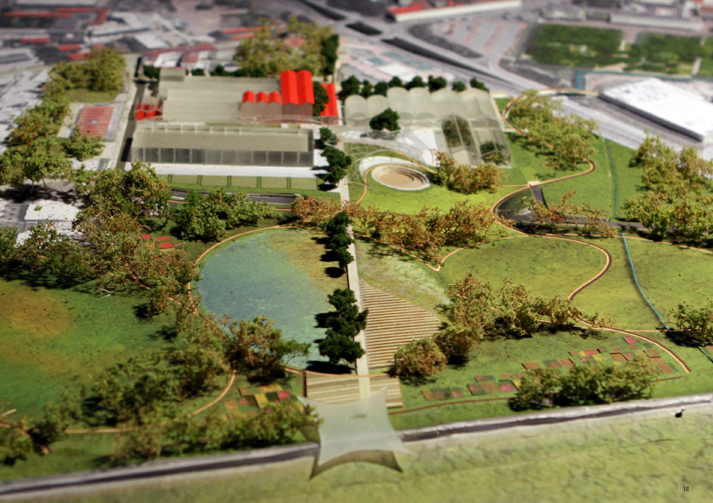

Sketch di progetto


Sezione paesaggistica: area di progetto

| Concept: il verde come elemento di connessione |
| Il tema della green infrastructure, oltre che ad una macro scala viene utilizzato anche come elemento genatore per il concept dell'intervento nell’area ex Gres, diventando il sistema di connessione all'interno dell'area e facendo entrare il parco tra i capannoni recuperati. Questo risulta fondamentale per rendere di nuovo il terreno permeabile e per creare una protezione naturale in termini di microclima. I percorsi pedonali e ciclabili entrano all'interno dell'area e la connettono al sitema della green infrastucture. |
Sketch di progetto |
|
Sezione paesaggistica: area di progetto |
| |
|  |